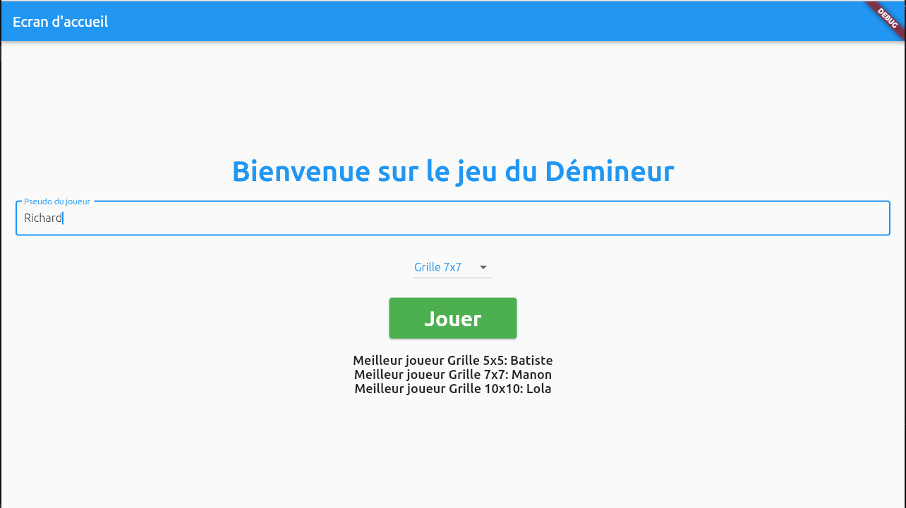

Diana
Lors de ma deuxième année de BTS, j'ai proposé de développer une plateforme
permettant un accès rapide et sécurisée aux informations du parc informatique
et automatique de l'entité MasterTech.
Langages utilisés : JavaScript framework Angular, HTML, SCSS, TypeScript, SQL, Nodejs.
Cette usine, avait en interne déjà développer un outil qui se nomme : Diana.
C'est un tableau de bord analytique des lignes de production de MasterTech.
Cependant, elle a aussi pour vocation de devenir l'application centrale pour les diverses services de l'entité.
Lors de mon alternance chez eux, je leur ai proposé de centralisé toutes les informations du parc informatique et automatique de l'usine.
Car à ce moment là, tout était gérer à l'aide de fichier Excel pour beaucoup oublier ou non partagé. De plus,
nous n'avions pas d'endroit pour enregistrer toutes les interventions que nous faisions. Nous n'avions pratiquement aucune
traces de ce que nous faisions.
De ce fait j'ai créer un prototype que j'ai ensuite proposé aux services. Une fois la maquette validée, je me suis lancée dans le
développement de ces différentes parties.
J'ai créer un plan interactif qui permet de situer les zones de l'usine et si on le souhaite, d'afficher l'emplacements des baies réseaux.
Lorque l'on clique sur une zone, une page à droite du plan s'ouvre et indique les informations suivantes : le nom du secteur,
le réferent et les pilotes de lignes, ainsi que les ordinateurs, imprimantes, écrans et automates présents sur la ligne.
Une autre partie sert à avoir un inventaire de tous les équipements informatique et automatique :
J'ai aussi mis en place une gestion des intervenants. Il est possible de supprimer ou ajouter un intervenant :
Possibilité de voir et filtrer toutes les interventions qui ont été enregistrées :
Et, il y a un tableau qui réuni tous les rapports de diagnostiques des incidents :
Accessibilité Numérique
Durant ma troisième année de BUT, j'ai eu la chance d'être cheffe de projet.
Ce projet consiste à piloter l'implémentation des normes d'accessibilité dans
l'application web EcoStruxure Control Engineering.
Langages utilisés : PHP, HTML, CSS, JavaScript avec la librairie Jquery.
Dans un monde de plus en plus numérisé, l'accessibilité numérique est devenue un enjeu
crucial pour garantir l'inclusion de tous les individus, quelles que soient leurs capacités
physiques ou cognitives. Elle consiste à concevoir, développer et maintenir des technologies
numériques de manière qu'elles soient utilisables y compris par les personnes en situation de
handicap.
En effet, le projet d'accessibilité numérique auquel nous nous consacrons vise
précisément à rendre notre application web accessible à un public aussi large et diversifié que
possible. Il adopte une approche proactive et globale pour identifier, comprendre et résoudre
les obstacles potentiels à l'utilisation de notre application par différents types d'utilisateurs. Cela
inclut notamment les personnes ayant des troubles de la vision, de l'audition, ainsi que de
l'incapacité motrice. Il s'agit d'un processus continu et itératif, où l'écoute des retours
d'expérience des utilisateurs joue un rôle central dans l'évolution et l'amélioration constante de
notre application.
En fin de compte, notre objectif est de créer une expérience utilisateur inclusive et
équitable pour tous. Tout en veillant à ce que chaque individu, quels que soient ses besoins ou
ses limitations, puisse accéder efficacement à notre application web. De plus, il faudra qu'il
puisse interagir avec elle de manière significative et en tirer pleinement parti pour répondre à
ses besoins et objectifs spécifiques. Ce projet m'a été confié, donc lors de sa mise en place, j'ai
dû planifier le projet, ainsi que le suivre assidument.
Lors de mes recherches j'ai appris qu'il y avait deux principales normes :
la norme WCAG qui est adopté à l'internantionnal
et la norme RGAA qui est spécifique à la France.
Il est important de souligner qu'en matière d'accessibilité, ces normes proposent différents
niveaux de conformité. Chacun vise à répondre aux besoins spécifiques des utilisateurs.
Le niveau A, qui représente le premier niveau de conformité, inclut des critères de
succès essentiels permettant à un large éventail d'utilisateurs d'accéder aux contenus.
Les recommandations de ce niveau sont souvent relativement simples à mettre en œuvre
et visent à assurer une accessibilité de base.
Le niveau AA, plus exigeant, comprend des critères supplémentaires offrant une
accessibilité accrue à des groupes d'utilisateurs plus spécifiques. Les recommandations
de ce niveau sont plus spécialisées et peuvent nécessiter des efforts plus importants pour
leur mise en place. Elles visent à améliorer significativement l'accessibilité pour un plus
grand nombre d'utilisateurs.
Le niveau AAA, le plus élevé en termes de conformité, inclut des critères de succès
particulièrement avancés. Il peut parfois nécessiter des adaptations complexes. Ces
critères visent à répondre aux besoins très spécifiques d'utilisateurs particuliers. Ils sont
souvent réservés à des cas d'utilisation très spécifiques (comme l'ajout d'une version en
langue des signes).
Pour vous permettre de mieux saisir les différences entre ces trois niveaux de conformité, voici
quelques critères de succès de différents niveaux pour la recommandation qui concerne
l'accessibilité des médias :
• Niveau A : tous les contenus audios préenregistrés sont sous-titrés à moins que l'audio
ne soit la transcription d'un texte écrit.
• Niveau AA : toutes les vidéos ont une audiodescription.
• Niveau AAA : tous les contenus audios sont accompagnés d'une version en langue
des signes.
En me concentrant sur trois paramètres clés du menu d'accessibilité, j'ai commencé par
mettre en place la fonctionnalité de simplification de l'application. Cette option
permet aux utilisateurs de choisir une interface simplifiée, conçue pour réduire la surcharge
d'informations et améliorer la navigation pour les personnes malvoyantes.
Un autre paramètre important est le zoom de l'application. Il offre aux utilisateurs la possibilité
d'ajuster la taille du texte et des éléments de l'interface selon leurs besoins visuels.
Cette fonctionnalité garantit une expérience utilisateur optimale, même pour les personnes
ayant des troubles de la vision.
Et sur les thèmes de l'application, j'ai pris en compte différents types de
daltonisme. J'ai ainsi proposé cinq thèmes distincts. Chacun est adapté à un type
spécifique de déficience visuelle. Ces thèmes incluent un mode clair, un mode sombre, ainsi
que des modes spécifiques pour la deutéranopie, la protanopie et la tritanopie.
Cela offre ainsi une personnalisation optimale de l'interface selon les besoins de l'utilisateur.
Ce projet demande beaucoup de rigeur et de temps car notre application existante est complexe.
Il faut refactoriser tout le css, s'assurer que les liens, les boutons, les images ai des descriptions appropriées.
Et que notre contenu reste navigable en toutes circonstances.
Si vous voulez voir un aperçu, je vous suggère d'aller dans l'onglet "Paramètres d'accessibilité" si cela n'a pas déjà été fait.
Projet WebGl
Lors de ma troisième année de BUT, j'ai suivi un cours de WebGl.
A la fin de ce module, nous devions créer un projet qui respectait des conditions spécifiques.
Langage utilisé : Web.
Ce projet WebGl consistait à créer une scène en mouvement.
Tout d'abord, nous devions créer un sol avec un objet positionné au centre de celui-ci.
Puis, nous devions mettre trois objets supplémentaires disposés chacun dans un coin.
Maintenant, cette scène composée de cinq éléments doit tourner en rond.
De plus, il fallut ajouter un objet dubliqué cinq fois autour de l'élément central.
Ces nouveaux éléments, contrairement aux autres, doivent tourner en rond mais dans le sens inverse.
Voici une courte vidéo du rendu final :
La tour des héros
Dans le cadre de ma formation de BUT, j'ai pu apprendre le langage Angular.
A la fin de cet apprentissage, j'ai du créer une application web utilisant une base de donnée
cloud NoSql : Firebase.
Langages utilisés : JavaScript framework Angular, HTML, CSS, TypeScript, SQL.
Technologies utilisés : Firebase, Git.
Ce projet avait pour but de créer une application web avec le langage Angular.
Nous devions créer un endroit permettant d'avoir un inventaire de nos héros.
Cependant plusieurs critères étaient à respecter : un héro ne pouvait pas avoir deux armes, il ne pouvait pas
non plus avoir plus de 40 points en additionnant toutes ses statistiques. De plus, la somme
des points totaux d'une arme ne devait pas être différente de zéros.
Lorsque l'on assigné une arme à un héro, il fallait faire une addition entre les points de l'arme et ceux du
héro en fonction de leur catégorie : attaque héro + attaque arme, non pas attaque héro + esquive arme.
Pour plus de précision, je vous laisser regarder ma démo commentée :
Jeu du démineur
En troisième année de BUT, j'ai eu locasion de concevoir une application avec le langage Flutter.
Langage utilisé : Flutter.
Ce projet m'a permis de me familiariser avec le langage Flutter.
J'ai dû créer une application sous linux qui permet de jouer au démineur.
J'ai tout d'abord créer un menu permettant de rentrer son nom de joueur :

Il est impossible de jouer si le nom du joueur n'est pas saisie ou bien qu'il est rempli de charactère vide.
Une fois le pseudo écrit, il est possible de choisir le niveau de difficulté de la grille.
Ici, Richard va jouer sur une grille de 7x7 :

Lorsqu'il joue, il peut savoir à l'aide du texte en dessous de sa grille s'il faut déminer ou si la partie est terminée.
Une fois la partie finie :
Lorsqu'elle est terminée, toutes les cases non-découvertent se dévoilent.
En cliquant sur "Voir mon score", nous arrivons sur un écran qui nous présente les statistiques de notre partie.
Elle nous montre aussi le classement pour chaque niveau de difficulté avec une possibilité de suppression d'un score :